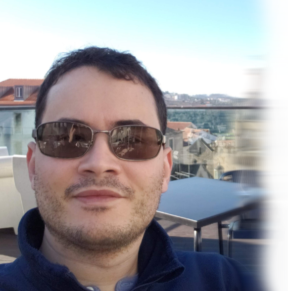

I'm a fullstack software engineer, working with embedded systems and software since 2012, and currently looking for new opportunities. Most recently, at Intellissis (2026), I built the applied AI practice of an engineering company serving the power sector: computer vision and LLM pipelines running on in-house GPUs, an inference platform for detection models, and web systems in Python/FastAPI and React/TypeScript on PostgreSQL. Before that, I worked with React at Wla SaaS, with Toradex and Raspberry Pi embedded systems at SPS Foods and, for three and a half years, with React and Django at Activesoft.
I graduated in Computer Engineering at Universidade Federal do Rio Grande do Norte (Brazil) and I also have a Bachelor's degree in Science and Technology from the same institution. Currently, I'm pursuing a Master's degree in Science, Technology and Innovation at UFRN, researching software tools to support material selection in wholesale distribution.
Over the years, I developed Internet of Things projects for remote monitoring and small automations, and mobile apps with React Native. From 2019 to 2021, I worked on AEDES (Aeronave de Defesa Social, "Social Defense Aircraft"), an autonomous patrol drone for the UFRN campus, on its avionics, flight control software and mobile app. I'm co-inventor of a granted patent (BR 102020016252-7) for a hybrid VTOL unmanned aerial vehicle, granted by INPI on February 18, 2026. I also took part in a project for remote machine monitoring with artificial neural networks.
On the software side, I work with React, TypeScript, JavaScript, HTML and CSS on the frontend, and Python (FastAPI, Django, Flask), REST APIs and Celery/Redis workers on the backend. I'm also familiar with Node.js (Express) and C#/.NET. I also work with PostgreSQL/PostGIS, SQL Server, MySQL, Docker, Git, Linux, Grafana and Apache Superset, as well as computer vision (YOLO) and local LLMs.
On the hardware side, I have experience with the Arduino platform, NodeMCU (ESP8266), Particle.io boards, APM 2, Pixhawk and Raspberry Pi. I have expertise in 3D modelling with PTC Creo, SolidWorks and Autodesk Fusion, and in printed circuit board design with Autodesk EAGLE and Proteus. I also have expertise in assembly and configuration of drones and 3D printers.
On a more personal note, I have interest in photography, music, Hi-fi devices, computers, video games, virtual reality, automobiles, dachshunds and the cosmos.
Every content in this website is of my authorship, except when I point out the author or the project/company to which it belongs.